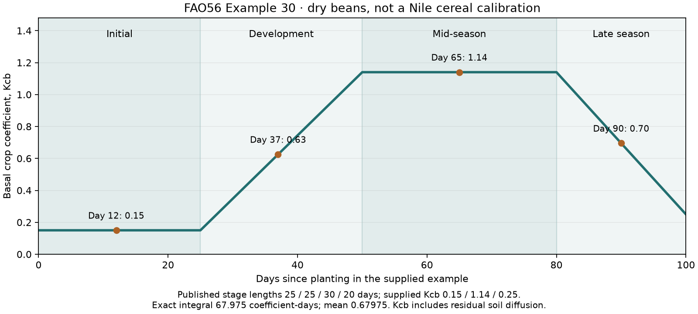

EARTH EVIDENCE · 14 NOVEMBER 2026
Crop demand changes through four supplied growth stages
The mathematical curve and source extraction are verified. Local cereal stages, climatic adjustment and root uptake remain unqualified. This component does not change harvests or settlements.
A published component check
A supplied curve holds its initial coefficient, rises linearly during development, holds its mid-season value, then changes linearly to its final value. Exact interval integrals give a mean coefficient for each actual step duration, including steps crossing stage boundaries.

Dry beans are the published arithmetic example. The curve is not adopted for Nile barley.| Day | FAO rounded value | Component value |
|---|
| 12 | 0.15 | 0.150000 |
| 37 | 0.63 | 0.625200 |
| 65 | 1.14 | 1.140000 |
| 90 | 0.70 | 0.695000 |
Basal ET is not pure root transpiration
FAO56 defines Kcb × ETo as primarily transpiration, with residual diffusion from below the dry soil surface and beneath dense vegetation. The earlier water scenarios used legacy crop coefficients as supplied constant root-demand coefficients. A later stage curve needs an explicit decision about that residual flux and the crop uptake operator.
Table 17 assumes minimum relative humidity of 45% and wind speed of 2 m/s. FAO requires climatic adjustment of mid/end coefficients above 0.45 outside the reference conditions. These generic coefficients are source facts, not locally measured ancient crop parameters.
| Crop | Initial Kcb | Mid Kcb | End Kcb |
|---|
| Barley | 0.15 (cereal heading) | 1.10 | 0.15 |
| Spring Wheat | 0.15 (cereal heading) | 1.10 | 0.15-0.3 |
| Winter Wheat | 0.15-0.5 | 1.10 | 0.15-0.3 |
Winter-wheat initial values 0.15 and 0.5 refer to sparse ground cover and a fully covered, nonfrozen dormant winter period respectively. Its higher end value 0.3 is for hand harvesting. They are contextual alternatives, not unconstrained fitting ranges. Blank barley/spring initial cells inherit the cereal heading; they are not zero.
Stage durations retain their original context
FAO Table 11 gives these cereal examples for particular planting dates and climates. No row below establishes a Nile barley calendar. An unspecified source region is kept unspecified.
| Source crop group | Initial / development / mid / late days | Total days | Planting | Source region |
|---|
| Barley/Oats/Wheat | 15 / 25 / 50 / 30 | 120 | November | Central India |
| Barley/Oats/Wheat | 20 / 25 / 60 / 30 | 135 | March/Apr | 35-45 °L |
| Barley/Oats/Wheat | 15 / 30 / 65 / 40 | 150 | July | East Africa |
| Barley/Oats/Wheat | 40 / 30 / 40 / 20 | 130 | Apr | Unspecified in row |
| Barley/Oats/Wheat | 40 / 60 / 60 / 40 | 200 | Nov | Unspecified in row |
| Barley/Oats/Wheat | 20 / 50 / 60 / 30 | 160 | Dec | Calif. Desert, USA |
| Winter Wheat | 20 / 60 / 70 / 30 | 180 | December | Calif., USA |
| Winter Wheat | 30 / 140 / 40 / 30 | 240 | November | Mediterranean |
| Winter Wheat | 160 / 75 / 75 / 25 | 335 | October | Idaho, USA |
| Grains (small) | 20 / 30 / 60 / 40 | 150 | April | Mediterranean |
| Grains (small) | 25 / 35 / 65 / 40 | 165 | Oct/Nov | Pakistan; Arid Reg. |
The California winter-wheat initial/development lengths carry footnote 2: these periods lengthen in frozen climates according to dormancy and days without growth potential. The 240-day Mediterranean winter-wheat example cannot silently replace a supplied four- or five-bin barley calendar.
Next dependency
Qualify local phenology, reference evaporation and climatic adjustment, basal diffusion versus root uptake, canopy exposure, root development and inundation/drainage dates before declaring an Earth stage-curve comparison. Do not choose stage ratios because they improve Egypt. Tigris, independent regions and shared Earth/fantasy river flow remain open.
The release-3 settlement atlas and marketed share 0.3923 remain current; whole-empire Egypt calibration still fails.